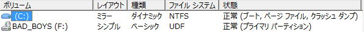

| TOP | weblog | TIPS | Works | リンク |
| 2012-10-29 ハードディスクの障害対策 昔、ＨＤＤの容量が小さく高価であった頃、パソコンのバックアップは「バックアップなんてしない」が結構当たり前でした。 「ハーディスクが壊れる」と言いう認識がとても薄かったようです。（今でも、そう言う風潮があるように思われます） 実はハードディスクがパソコンの部品の中で一番故障が多いのにね。 ハードディスクは絶対にいつかは壊れて、放っておくと大事なファイルを失って、とても哀しい思いをしてしまうのです、それは明日かもしれません。 オリジナルファイル（売ってないファイル、失ったら二度と手に入らないファイル）も多種多様で大容量となっています。 デジカメ写真、ビデオ動画、音楽作品、有料でダウンロードしたＭＰ３ファイル、etc、ファイルの合計GB超えてる方も多いでしょう。。 飛ぶと（失う、消える、壊れるを総じて）と死ぬほど哀しくなるファイル（デジカメ写真ファイルが多いようです）が沢山あるのではないでしょうか？ ここでは、一番重要な部品でかつ一番故障しやすいハードディスクの故障に備える簡単な方法を２つ紹介したいと思います。あくまでも「故障に備える」ですからね、「ディスクのミラーリング」について書いています。 ミラーリングしている１台が故障して、すぐ交換してした時だけ救われます。 ２台同時にぶっ壊れたらおしまいです、ヨロシクお願いします。 １、ハードディスクのミラーリング ミラーリングについては説明を省略します、丁寧にご説明しているページが沢山ありますから。 ミラーリングは、昔、そのようなテクノロジが無いとして考えると、「ハードディスクを丸ごとリアルタイムにバックアップする」てきな事ともいえます。 １．Windows7Pro、Windows8Pro のミラーリング機能を使う。 ※実は最近まで知らなかった、会社の人に教えてもらったのであります。 お使いのOSがWindows7Pro、Windows8Pro以上で、ディスクの増設が可能な方に限られます。 Windowsのファイルシステム（NTFS）がドライバレベルでミラーリングする機能が標準で搭載されています。 「コンピュータの管理」でディスクのミラーリングを行います。 ちょっとわかりにくいのですがCドライブが「ミラー」となっていて、ディスク０とディスク１にCドライブが割り当てられているのが分かります。  やっておいたほうが良いと思われる事 （１） Windowsのミラーリングはディスクが故障していないのにとミラーが外れる時がたまにあります。 勿論、故障するとミラーが外れます。 定期的に、１日に１回はミラーの状態が「正常」を確認しましょう。 下の図で「状態」が「正常」になっていればＯＫです。 （２） 大事なのは「ミラーの外し方」、どの物理ディスクが壊れているかの確認方法、取り外して交換して再度ミラーリングする手順を明確にすることです。 故障したのに部品の交換と復旧できなきゃ意味ないもんね。。 （３） アプリのハングアップなどで強制電源OFFをするとミラーしたディスクの「再同期」（リビルドとも言います）が行われます。 ちゃんとミラーされているかチェックするわけですね、 これが「うざい」、時間がかかるし、パフォーマンスも相当落ちます。 「再同期」の所要時間はディスクのサイズに比例します。 正確な計測ではありませんが３００GBで１時間程かかります。 ですので、あまりサイズの大きいディスクのミラーはあまりお勧め出来ません。 （４） 故障した場合に備えて予備のハードディスクを用意しましょう。 使用していないハードディスクを所有するなんてもったいないなんてせこいことは思わずに。 ２．ＲＡＩＤケースを利用する。 ノディスクの増設ができない場合はＲＡＩＤケースを選択する事になります。 ＬＡＮで接続するタイプ（ＮＡＳと言ったりする）もありますのでご利用の環境に合わせて選択してください。 ちなみに私がつかっているＲＡＩＤケースです（たぶんこれより２世代前ぐらい）、ＲＡＩＤ５が組みたくて買ったんですけど、やっぱＲＡＩＤ５は怖い,、ＲＡＩＤ１に戻しました。 コレガ RAID対応 PC連動電源機能搭載 3.5インチSATAハードディスクケース RAIDケースミラーリングでは、eSATA、USB、LANの順番にディスクのアクセス性能が落ちてきます。 ＵＳＢ，ＬＡＮタイプは音楽制作でのリアルタイム演奏＆録音などディスクの性能を要求する作業には利用できないかもしれません。 やっておいたほうが良いと思われる事 （１） ケースに入れた複数のディスクに故障が発生すると、その旨、分かるようになっているはずです。 どの様に通知されるかはＲＡＩＤケースの仕様で異なりますが、障害が発生していないかどうか一日１回はチェックしましょう。 （２） OSミラーと同様ですがどの物理ディスクが壊れているかの確認方法、取り外して交換して再度ミラーリングする手順を明確にしておきましょう。 購入して実際に使う前に片方のディスクを引っこ抜くなどして再構築の練習をすることが大切です。 （３） ケースが故障した時の対応も想定しておきましょう。 USB増設ディスクと同様のハードですから電源とかUSBの制御部とか故障します。 で、購入する前にぜひ確認しておきたいのが「ＲＡＩＤ１（ミラーリング）の場合、ディスクのフォーマットがＮＴＦＳかどうか？」ということです。 すなわちケースが故障してもハードディスクを取り出してパソコンに直接接続しても読み書きが出来るかを確認します。 大抵はＮＴＦＳのはずですが必ず事前に確認しましょう。 （４） ＲＡＩＤを購入してミラーを構成するとき、すでにデータの入っているディスクは（大抵）消去されます。 出来るだけ同じハードディスクを複数本新しく購入して使いましょう。 ちょっと思う事 古いテクノロジーの製品は段々少なくなり、やがて手に入らなくなります。 市場は「ＳＡＴＡ」に完全移行しており、新品の「ＩＤＥ」を積んだマザーボードやインターフェースカードは入手困難になって行くでしょう。（しばらくは大丈夫そうですけど） 「ＩＤＥ」ハードディスクもしばらくすると入手できなくなると思います。 ですから古いテクノロジのハードディスクでミラーリングを構築しても、故障した部品の代替が手に入らない時期がやってきます。 市場から部品が姿を消す前に新しいテクノロジの製品に移し替えることが、実は結構大事だったりするのです。 ４．ＤＶＤ−Ｒへのバックアップについて バックアップとしてCD-R,DVD-R、BD-Rにコピーを取っていらっしゃる方は結構いらっしゃると思います。 ですが、これらは、バックアップメディアとしては適切ではありません。（と思います） と言いつつ、自分もそうしたりしている..... 「CD/DVDの仕組み」が分かりやすくてよいです、XX-Rは有機色素にレーザー光線を当てて「ピット」（ディスク上のでっぱり」を形成します。 「再生光劣化」よか「反り」で経年劣化し最終的にはディスクからデータが読めなくなってしまいます。 DVD-R登場初期の台湾製ディスクを所有していましたが、４年後には色素が解けてディスク上ににじむというえげつない状態になっていました。（捨ててしまったので写真がないのが残念） ですので「DVDに焼いているので安心」と思わないでください、絶対に。 数年後には必ず何枚かはデータが読めないディスクが出てきます。 |